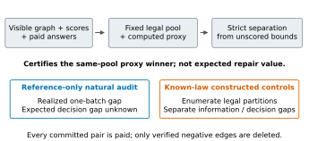
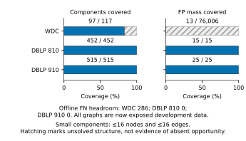
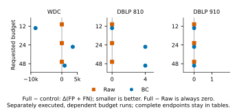
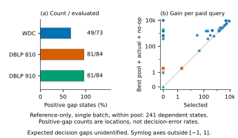
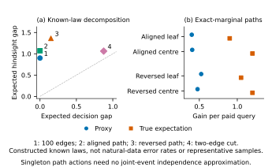
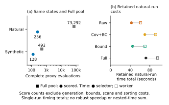

01 / What is certified?
A fixed-state, fixed-pool computed-proxy winner. Expected repair quality is a separate question.



V7.1 · EDITORIAL UPDATE
Separate what search can certify from what outcomes can identify.
Verification-only entity repair: paid pair queries, fixed batches, and deletion of verified negative edges only. Retained V7 evidence includes four constructed controls and saved Full-pool reconciliation. V7.1 updates presentation only; no scientific run is repeated.
REFRAME · Research evidence and reproducibility materials. No submission, acceptance or general superiority claim.
A Bayes-optimal negative control has frequent positive hindsight gaps. A separate tree control has exact pair marginals but a verifiable expected ranking reversal. The latter does not explain the natural-data gaps.
The same-pool audit checks saved candidate identities, scores, strict bounds, tie rules and fallback. Complete-score counts and measured runtime remain separate.
| Control | Expected hindsight gap | Expected decision gap |
|---|---|---|
| 100 independent edges | 0.899921 | 0 |
| Aligned path | 1.071 | 0 |
| Reversed path | 1.36275 | 0.15 |
| Two-edge batch | 1.0625 | 0.875 |
Known-law, initial single-batch gain per paid query. The 100-edge case is analytic; the other controls enumerate 8 + 8 + 4 legal worlds. No Monte Carlo, seed search, new selector or natural-data refit.
A fixed-state, fixed-pool computed-proxy winner. Expected repair quality is a separate question.

Component coverage is distinct from FP-mass coverage. Large-component bond coverage remains unknown.

The nine Full–Raw loss contrasts are zero. All 63 V5 natural endpoints remain downloadable.

Reference-only, single-batch, within-pool values. Positive gaps are locations, not decision-error rates.

Four constructed controls separate perfect-information value from expected decision gaps; exact marginal scores can still misrank this proxy.

Compare complete-score demand and recorded scores in the same Full pool. Retained natural-run times remain separate; counts do not establish elapsed-time speedup.

All six figures use the included, hash-checked tables. Public WDC aggregates do not independently revalidate pair identities. Full historical recomputation still needs the declared external assets.
python -m pytest -q tests
python scripts/make_figures_v7_1.py --out figures_rebuilt
python scripts/build_site_v7_1.py --out site_rebuiltThe paper and private review material are delivered separately. This page contains no manuscript, credentials, tracking or private data.
Source code and verification commands · Data sources, attribution and licenses